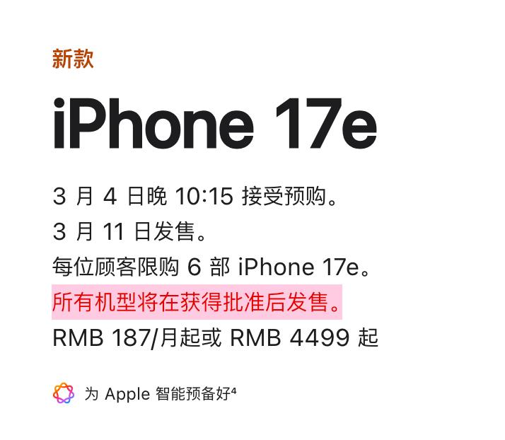
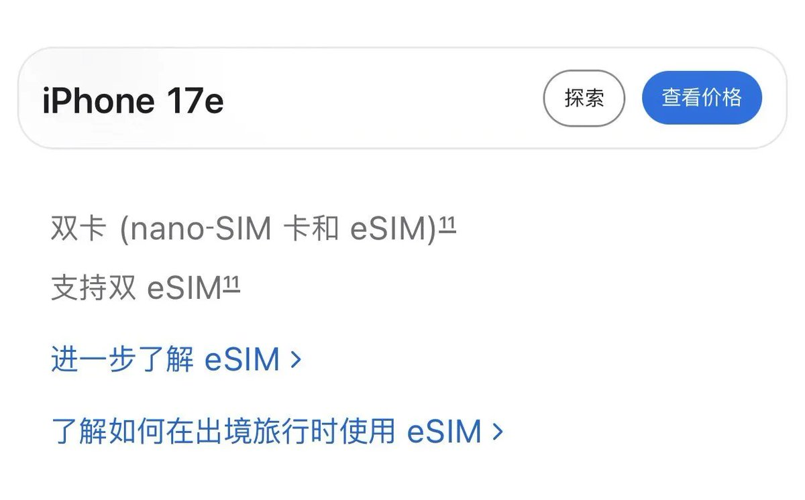
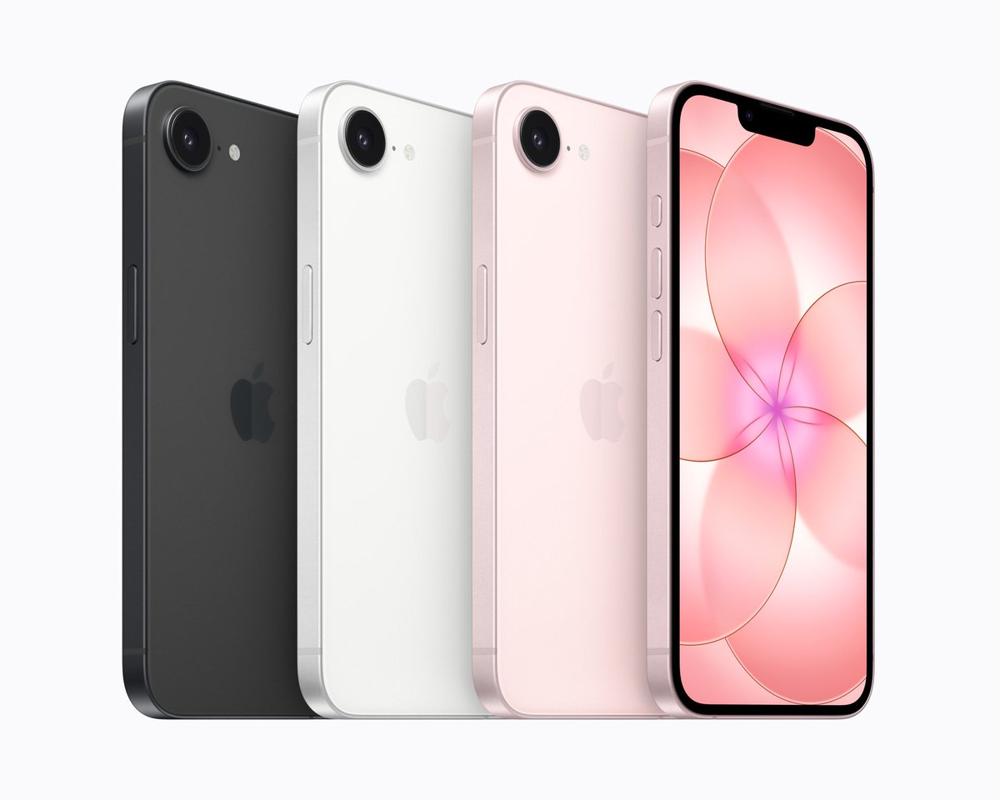
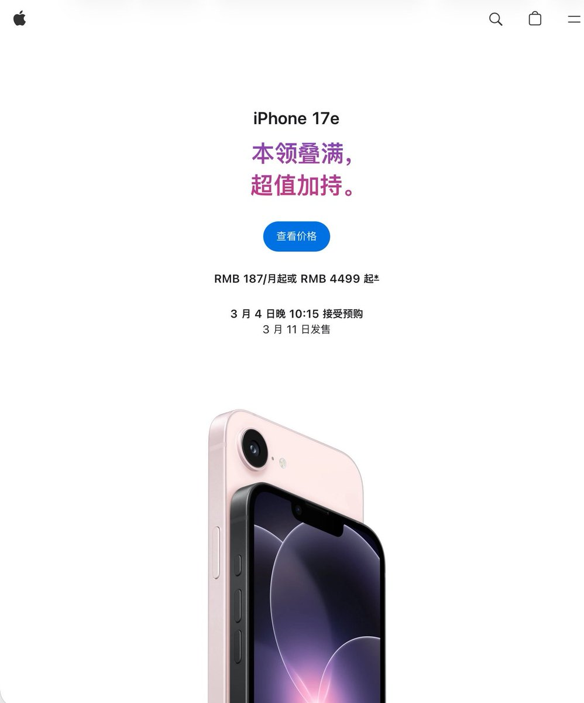
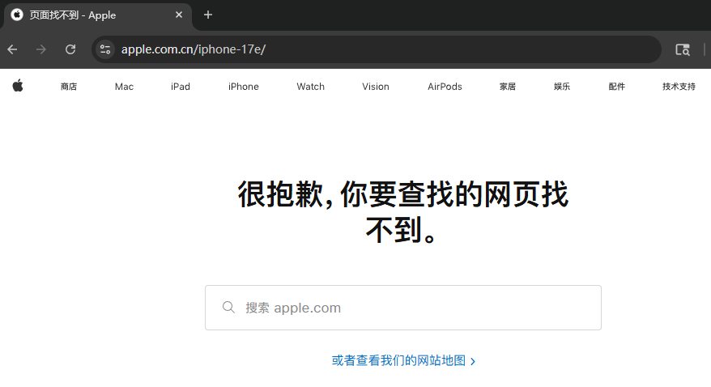

真出意外了，苹果中国的iPhone 17e（A3635）产品页已经404了，咱中国人民也是好起来了，也加入了1p+1e时代，只不过是实体SIM + eSIM（特供版）
和iPhone Air（A3518）刚上线一样，Apple Store页面已加入“所有机型将在获得批准后发售”，盲猜未来中国发售带eSIM功能的国行iPhone首发都至少要晚两个礼拜发售。
而且国行的eSIM（特供版）都有电子围栏，只能在中国境外写GSMA标准的国际eSIM。也存在EID跨运营商共享的问题，一个EID只能同时占有2个国内eSIM，出二手要是卖家没解绑彻底就只能写1张、甚至业务报错写不了任何国内eSIM，那就很惨了...

和iPhone Air（A3518）刚上线一样，Apple Store页面已加入“所有机型将在获得批准后发售”，盲猜未来中国发售带eSIM功能的国行iPhone首发都至少要晚两个礼拜发售。
而且国行的eSIM（特供版）都有电子围栏，只能在中国境外写GSMA标准的国际eSIM。也存在EID跨运营商共享的问题，一个EID只能同时占有2个国内eSIM，出二手要是卖家没解绑彻底就只能写1张、甚至业务报错写不了任何国内eSIM，那就很惨了...





不出意外的话，国行iPhone 17e（A3635）仍与国行Air（A3518）存在一致的eSIM政策，使用同款C1X调制解调器，可谓是“本领”叠满！
和17标准版一样的A19芯片（4GPU），终于加入了Magsafe功能，仍然是60Hz刘海屏，售价4499起。
再加500冲国补iPhone 17不香吗... https://t.co/G2ixMCVHC6
和17标准版一样的A19芯片（4GPU），终于加入了Magsafe功能，仍然是60Hz刘海屏，售价4499起。
再加500冲国补iPhone 17不香吗... https://t.co/G2ixMCVHC6